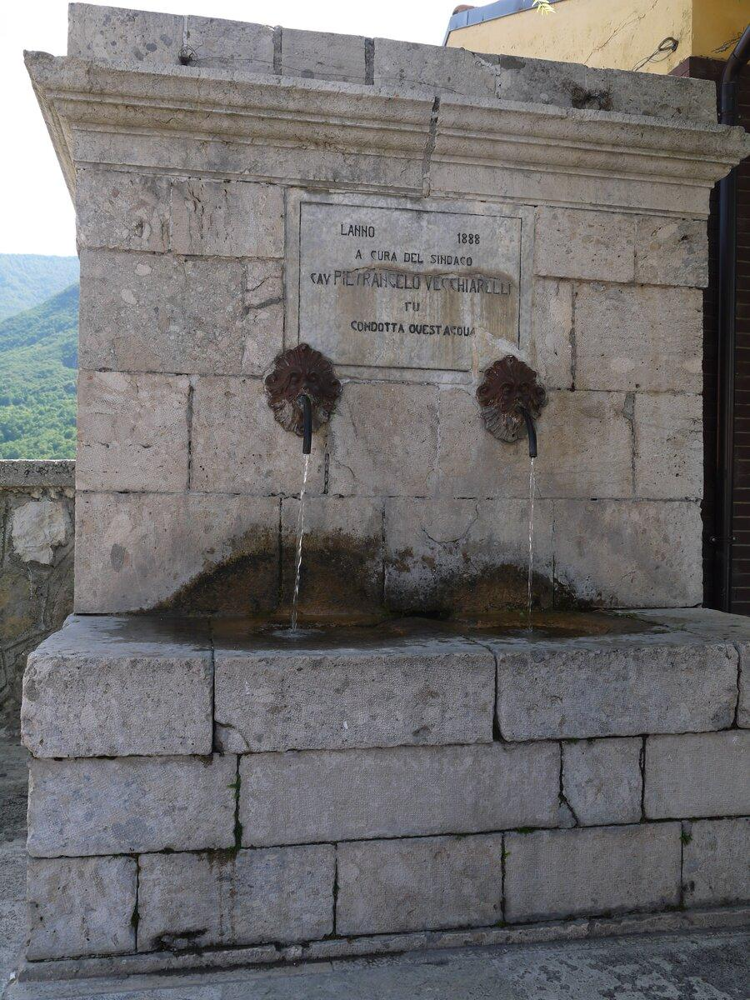

The Valle Roveto begins the moment I clear the Salviano tunnel — mountains folding into one another, a green so fresh it feels like an invitation. Driving through here is quite nice, the road easy and well marked, sliding past small villages that look painted onto the mountainside. We passed Capistrello, its old quarter striking as it watches from above, then Pescocanale, another little gem of stone that would deserve a stop of its own.


But today's destination was something else — a call made of coolness and green leaves: Parco della Sponga.
Notes from the Park
If I had to describe Parco della Sponga in one word, I'd choose stillness. It's an oasis, fully immersed in the most vivid green I could imagine. The moment I stepped in, I noticed how clean and cared for the place is, down to the smallest detail. It's the kind of place made for a carefree day, whether with family or friends.
Today, for us, it was a full immersion in nature. We walked the short trails made for easy strolls — perfect for enjoying the woods without the pressure of serious hiking — accompanied the whole way by the constant sound of streams and small waterfalls tucked between the trees.


Then, all at once, I reached the highlight: a beautiful lake, its water cold and crystal clear. Just looking at it made me want to touch it, to feel the pure energy coming down from the mountain. There, calm ruled completely. I put my phone away, breathed the good air, and let the moment hold me.


The Richness of the Valley
Walking beneath the branches, I found myself thinking about how rich this land really is. The Valle Roveto doesn't just offer breathtaking views — it holds a whole heritage of natural products, born from the passion of the people who live here and refuse to let their traditions fade, using them instead as a way to give value back to the land. There's pure water, there are truffles, uncontaminated orchards, and of course the Roscetta chestnut, which becomes queen of the valley in autumn.
But our Sunday wasn't done yet. Right above us, clinging to the rock and standing guard over these waters, was a village that kept calling us. We climbed the switchbacks to go discover the secrets of Canistro.

I actually come to Canistro often. I return for a ritual that's both ancient and thoroughly modern: filling my recycled glass bottles straight from the source. Some might call it a small thing, but it isn't, not to me. Going to the spring means drinking water with no filters, no plastic toll, and no cost at all. And let's be honest — every trip to fill those bottles is also the perfect excuse to feast my eyes on this place. It's a view I never get tired of.

This last visit, though, was something else. We arrived on a day of community celebration: the inauguration of a new pedestrian path connecting Canistro Superiore — the old fortified nucleus at roughly 800 meters, set against the slopes of the Simbruini Mountains — to the lower village, which unfolds further down along the river. It's the kind of bet a village makes when it isn't ready to be counted out: give people a reason to walk between the two halves of Canistro, and let the water that already runs through both of them do the rest.

The water greets me the moment I arrive, and it doesn't take long to understand why this village built its whole identity around it. Fountains are everywhere: cared for, spotless, dressed with flowers. Some are old and monumental, like the striking Fountain of the Masks, where water pours proudly from carved stone faces.


Fragments of History Among the Alleys
Before joining the crowd gathering in the square, I let myself get lost, deliberately, in the narrow streets. I wanted to take it in alone. I found quiet, precious corners: typical lanes where houses are dressed with plants and flowers on the balconies, next to older homes standing as silent witnesses of a time gone by.


Arrived in front of Palazzo Vecchiarelli, I noticed documents and historical photographs hanging on its walls, telling a deep wound of this land: emigration. Images of those who decided to leave this beautiful region to work hard in the mines abroad, mostly in Belgium, reminded me of my own departure — and the homesickness that never quite fades.


Work contracts and residence permits for Canistro's emigrants in Belgium and France.

A little further along the same street, I came across "Il Vicolo dei Ricordi" — an open-air photo exhibit of the village's life in the last century. Looking into those black-and-white pictures, I understood that the idea of community here is a thread that has never broken.

Looking into those black-and-white pictures, I understood that the idea of community here is a thread that has never broken.
I found the same thing confirmed back in the square. It was full of life — locals, young and old, all bound by a deep pride, happy to share the beauty of their village with someone like me, coming from outside.

Amazing Paths Through the Valley
The ceremony begins. The notes of the Alpini band cut through the air, lifting the procession of walkers as we head toward the trailhead. But it only takes a few steps into the woods for the music to fade, giving way to peace and silence.

Here, time stops meaning much. We walk under the shade of centuries-old chestnut trees — the same ones that gift the prized Roscetta we'd already heard about down in the valley — and the smell of the forest, that unmistakable mix of earth, leaves, and resin, fills my lungs.


Along the path, a small mountain chapel, welcoming and quietly striking, seemed to invite me to slow down and step in for a moment of stillness.

A little further on, someone has placed beautiful benches: I sat down and let my eyes follow the Valle Roveto unrolling in front of me — the same valley we'd driven through that morning, now seen from above, immense and green.

The trail eventually leads us back toward Canistro Inferiore, and the mood shifts with it — up above it was stone, silence, memory; down here, ordinary life just keeps going, unhurried, with the Liri running straight through the middle of it. You can hear the river from almost anywhere in the lower village — it's less a landmark than a constant, background note to everything else.
As soon as I finish loading the bottles, I sit down by the fountain, in the shade, and let my eyes rest on the view a little longer. I wasn't ready to leave yet. Canistro gives you stillness, and a sunset worth waiting for — a village that follows its water, is built around it, and stays alive because of it.
A Few More Frames from the Day